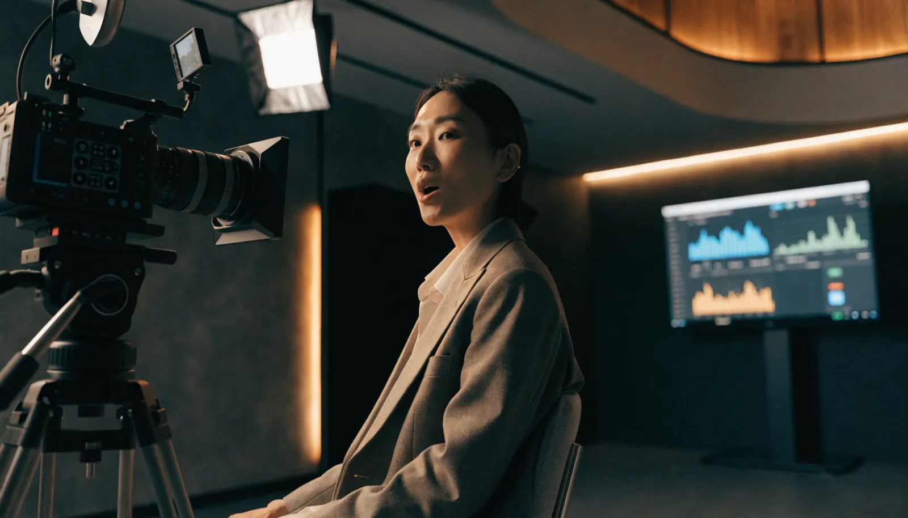

YouTube運用代行 ｜ 東京 ｜ 費用
YouTubeが続かないのは、
「仕組み」がないからです。
東京でYouTube運用代行の費用・相場をお調べの方へ。YouTube運用代行とは何か、料金は何で決まり、費用で失敗しないためにどこを見ればいいのか。株式会社NOKTOAが、企画・撮影・編集・分析まで一貫対応する立場から正直に解説します。

YouTube運用代行とは
YouTube運用代行とは、企業に代わってYouTubeチャンネルの戦略設計・企画・撮影・編集・投稿・分析改善を行うサービスです。チャンネルの目的に合わせて継続的に動画を制作し、成果につなげる体制を専門家が担います。
「YouTubeを始めたが、動画作りが重すぎて続かない」「投稿しても再生されない」——東京の企業からよくいただく相談です。YouTubeは、SNSの中でも特に1本あたりの制作負荷が大きく、企画・撮影・編集・サムネイル・分析と工程が多いため、片手間では継続できません。この一連の運用を専門家に任せるのがYouTube運用代行です。
ただし運用代行の中身は会社によって大きく異なります。編集だけを請け負うところもあれば、チャンネル戦略の設計から撮影・分析まで一貫して担うところもあります。費用の差は、この「どこまで任せられるか」の差です。
YouTube運用代行の費用を決める5つの要素
結論：費用は「撮影」と「チャンネル戦略」を含むかどうかで大きく変わります。
YouTube運用代行の料金は、おおむね次の要素で決まります。見積もりを読むときのチェックリストとしてお使いください。
- 月の動画本数：月に何本を企画・制作・投稿するか
- 撮影の有無：素材支給か、プロが撮影に入るか。費用への影響が大きい項目です
- 編集の作り込み：テロップ、効果音、モーションなどの密度
- チャンネル戦略・企画：編集代行だけか、伸ばす設計から行うか
- 分析・改善：再生数や視聴維持率を見て次に活かす体制があるか
とくに「撮影」と「チャンネル戦略」を含むかどうかが、月10万円台と月30万円台を分ける境目です。安い運用代行は編集の請負にとどまり、伸ばすための戦略や撮影が含まれないことが少なくありません。
東京でのYouTube運用代行 費用の目安
あくまで一般的な相場感です。内容により変動します。
| タイプ | 月額の目安 |
|---|---|
| 編集代行のみ（撮影なし） | 10〜20万円 |
| 企画・撮影・編集・分析の本格運用 | 30〜60万円 |
| 複数チャンネル・広告連携まで | 60万円〜 |
NOKTOAは、チャンネル戦略・企画・撮影・編集・分析改善までを含むYouTube運用を、月額30万円〜（税別）で提供しています。映像制作を本業とする私たちは、運用代行でありながら撮影・編集のクオリティを妥協しないのが特長です。
費用で失敗しないための3つの視点
結論：安さではなく「伸ばす設計が含まれているか」で選ぶべきです。
1. チャンネル戦略があるか
誰に何を届け、どんなチャンネルに育てるかの設計がないまま投稿しても、再生数は伸びません。安価な代行ほどここが抜けています。
2. 撮影・編集の質を担保できるか
YouTubeは最初の数秒で離脱が決まります。撮影と編集の質が、視聴維持率とチャンネルの成長を直接左右します。
3. 数値で改善する体制か
再生数・視聴維持率・クリック率を見て次に活かす。この改善のサイクルがあるかどうかが、半年後の差になります。
NOKTOAは経営理念に「『伝える』を『資産』へ。」を掲げ、YouTubeを一過性の投稿ではなく、検索で見つけられ続ける資産として育てます。費用対効果に本気で向き合う企業さまの、戦略的パートナーでありたいと考えています。
成果が出るまでの期間と、費用の考え方
結論：YouTubeは「短期の広告」ではなく「中長期の資産づくり」として費用を捉えるべきです。
YouTube運用代行の費用を検討するとき、多くの方が「いつから成果が出るのか」を気にされます。正直にお伝えすると、チャンネルが育って安定的に再生が回り始めるまでには、一般的に半年から1年程度かかります。最初の数か月は、どんな企画が視聴者に刺さるかを見極め、勝ちパターンを蓄積する投資期間です。
その代わり、YouTubeの動画は一度上位に表示されれば、検索やおすすめから継続的に再生され続けます。広告のように出稿を止めると消える流入ではなく、積み上がって長く働くストック型の資産です。だからこそ費用は「単月の費用対効果」ではなく「1年でどれだけ資産が積み上がったか」で判断するのが正しい見方です。
NOKTOAは毎月のレポートで再生数・視聴維持率・流入元を可視化し、何が効いたかを共有しながら改善を重ねます。費用を「払って終わり」にせず、検索で見つけられ続けるチャンネルに、二人三脚で育てていきます。
料金は、御社のチャンネル目的に合わせて設計します
YouTube運用代行の費用は「一律いくら」ではありません。狙う成果、動画の本数、撮影の規模によって最適な体制が変わるからです。NOKTOAは決まったプランを押し付けるのではなく、ご予算と目的を伺って、その範囲で最も成果が出る運用設計を逆算してご提案します。
スモールスタート
月数本から、まずチャンネルの型を作る。小さく始めたい方に。
スタンダード
戦略・撮影・編集・分析まで一貫対応。本格的に伸ばす運用です。
フラッグシップ
複数チャンネル・広告連携まで。事業の柱に育てるフェーズに。
「この予算でどこまでできる？」というご相談こそ大歓迎です。まずは月数本から始めて、成果を見ながら広げる進め方もご提案します。ご相談・お見積もり、既存チャンネルの簡易診断まで無料で承りますので、まずはお気軽にお問い合わせください。無理な営業は一切いたしません。
よくあるご質問
YouTube運用代行とは何ですか？
企業に代わってYouTubeチャンネルの戦略・企画・撮影・編集・投稿・分析改善を行うサービスです。継続的に動画を制作し成果につなげる体制を専門家が担います。
YouTube運用代行の費用は東京でいくらですか？
編集のみで月10〜20万円、企画・撮影・編集・分析込みの本格運用で月30〜60万円が相場です。NOKTOAは一貫対応で月額30万円〜（税別）です。
YouTube運用代行の費用は何で決まりますか？
月の動画本数、撮影の有無、編集の作り込み、チャンネル戦略の深さ、分析改善の範囲で決まります。撮影と戦略を含むかが大きな分かれ目です。
これからチャンネルを始める段階でも依頼できますか？
もちろんです。チャンネルのコンセプト設計から、最初の動画制作までご一緒します。ゼロからの立ち上げこそ戦略設計が効きます。すでに運用中で伸び悩んでいるチャンネルの立て直しにも対応しますので、現状をお聞かせください。